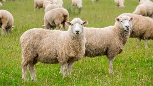
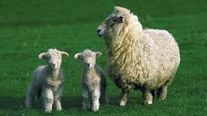
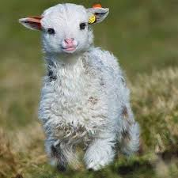

<!-- 1) დაამატე `<h2>` თეგი და ჩაწერე "ჩემი საყვარელი ცხოველი"  
2) ქვეშ ჩასვი სურათი შენი საყვარელი ცხოველის — შეგიძლია ეს გამოიყენო:  
   https://www.w3schools.com/html/img_girl.jpg  
3) გამოიყენე `alt` ატრიბუტი და ჩაწერე აღწერა სურათისთვის  
4) დაამატე კომენტარი, სადაც აღწერთ რას აკეთებს alt ატრიბუტი <3
5) ჩასვი 2 სხვადასხვა სურათი ზედიზედ  -->


<p><h2>ჩემი საყვარელი ცხოველია ცხვარი</h2></p>
<p><h2> შენი საყვარელი ცხოველის — შეგიძლია ეს გამოიყენო:  </h2></p>


<!-- HTML-ში "alt" ატრიბუტი გამოიყენება იმისთვის, რომ სურათს დავურთოთ ტექსტური აღწერა. ეს აღწერა გამოჩნდება იმ შემთხვევაში, თუ სურათი რაიმე მიზეზით ვერ ჩაიტვირთება. გარდა ამისა, "alt" ტექსტი ეხმარება საძიებო სისტემებს და ეკრანის წამკითხველ პროგრამებს სურათის შინაარსის გაგებაში.
 -->


 


